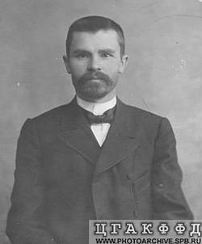

Шапошников Г.Н.
С сайта «Газетные старости»

Г.Н.Шапошников – в 1906 Депутат Государственной Думы от Курской губернии.
ВЕЛИКОМИХАЙЛОВКА, 29 июня.
Население получает из Петербурга анонимные письма, называющие местного
крестьянского депутата Шапошникова врагом Царя, крамольником, безбожником.
Несомненно, письма эти - дело центральной черносотенной организации.